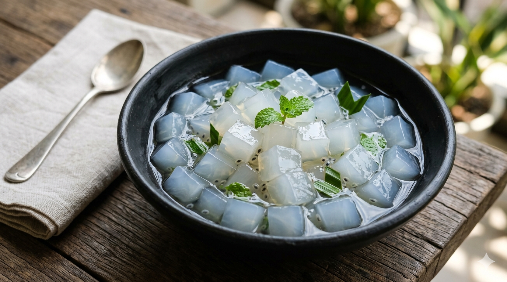

Projek Kolaborasi SMP Santa Angela Bandung
Pada Semester 2, dimulailah projek kolaborasi kelas 9 yang bertema bioteknologi konvensional yang telah direncanakan oleh para suster dan guru Santa Angela yang bertujuan untuk meningkatkan pemahaman siswa mengenai fermentasi dan penerapannya.
Nata de coco adalah produk bioteknologi konvensional yang dibuat melalui proses fermentasi air kelapa menggunakan bakteri Acetobacter xylinum. Bakteri ini menghasilkan lapisan selulosa berbentuk gel yang kemudian diolah menjadi makanan kenyal dan segar.
Proses fermentasi ini membutuhkan waktu beberapa hari dengan kondisi tertentu seperti suhu, pH, dan kadar gula yang tepat agar hasilnya optimal. Nata de coco memiliki kandungan serat tinggi yang baik untuk pencernaan.
